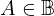

Expression of type Equals¶
from the theory of proveit.logic.booleans¶
In [1]:
import proveit
# Automation is not needed when building an expression:
proveit.defaults.automation = False # This will speed things up.
proveit.defaults.inline_pngs = False # Makes files smaller.
%load_expr # Load the stored expression as 'stored_expr'
# import Expression classes needed to build the expression
from proveit import A, C, Conditional
from proveit.logic import And, Boolean, Equals, Implies, InSet, Not
In [2]:
# build up the expression from sub-expressions
sub_expr1 = InSet(A, Boolean)
sub_expr2 = Implies(A, C)
sub_expr3 = Implies(Not(A), C)
expr = Equals(Conditional(C, And(sub_expr1, And(sub_expr2, sub_expr3))), Conditional(C, And(sub_expr1, sub_expr2, sub_expr3))).with_wrapping_at(1)
In [3]:
# check that the built expression is the same as the stored expression
assert expr == stored_expr
assert expr._style_id == stored_expr._style_id
print("Passed sanity check: expr matches stored_expr")
In [4]:
# Show the LaTeX representation of the expression for convenience if you need it.
print(stored_expr.latex())
In [5]:
stored_expr.style_options()
In [6]:
# display the expression information
stored_expr.expr_info()
| core type | sub-expressions | expression | |
|---|---|---|---|
| 0 | Operation | operator: 1 operands: 2 | |
| 1 | Literal |  | |
| 2 | ExprTuple | 3, 4 | |
| 3 | Conditional | value: 22 condition: 5 |  |
| 4 | Conditional | value: 22 condition: 6 |  |
| 5 | Operation | operator: 11 operands: 7 | |
| 6 | Operation | operator: 11 operands: 8 |  |
| 7 | ExprTuple | 10, 9 | |
| 8 | ExprTuple | 10, 15, 16 |  |
| 9 | Operation | operator: 11 operands: 12 |  |
| 10 | Operation | operator: 13 operands: 14 |  |
| 11 | Literal |  | |
| 12 | ExprTuple | 15, 16 |  |
| 13 | Literal |  | |
| 14 | ExprTuple | 25, 17 |  |
| 15 | Operation | operator: 19 operands: 18 |  |
| 16 | Operation | operator: 19 operands: 20 | |
| 17 | Literal |  | |
| 18 | ExprTuple | 25, 22 |  |
| 19 | Literal |  | |
| 20 | ExprTuple | 21, 22 | |
| 21 | Operation | operator: 23 operand: 25 |  |
| 22 | Variable |  | |
| 23 | Literal |  | |
| 24 | ExprTuple | 25 |  |
| 25 | Variable |  |